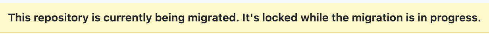

Troubleshooting
Common errors, their causes, and solutions.
Commits not collected, but Issues and Pull Requests are collected
Symptom You notice that in the monitor page you have repositories without commits counted, and metadata indicating that there are commits to count.
Cause We have observed this in one, specific cirucmstance, where repositories are being migrated from GitHub to GitHub enterprise. The gh gei migrate-repo function causes the clone to fail with :
remote: Repository 'department-of-veterans-affairs/diffusion-marketplace' is disabled.
remote: Please ask the owner to check their account.
fatal: unable to access 'https://github.com/department-of-veterans-affairs/diffusion-marketplace.git/': The requested URL returned error: 403
For a repository. When you navigate to the repository’s homepage, you see this:

This is a relatively new phenomena not experienced in our ten years building Augur and Aveloxis.
At this time there is not a known solution
Monitor dashboard renders slowly on a large fleet
Symptom: On a fleet approaching 100K repos, the monitor dashboard takes seconds to render each page, multiple browser tabs make it worse, and aveloxis serve collection workers become starved for DB connections.
Cause (v0.18.29 and earlier): Each dashboard render fired five separate aggregate queries against the heaviest tables in the schema — COUNT(*) FROM pull_requests, COUNT(*) FROM issues, COUNT(DISTINCT cmt_commit_hash) FROM commits, plus repo_info and vulnerability scans. With the dashboard’s <meta http-equiv="refresh" content="10"> triggering all of those every 10 seconds per browser tab, the cumulative scan load saturated the pgx pool.
Solution (v0.18.30):
GetRepoStatsBatchnow reads gathered counts directly fromcollection_queue.last_issues / last_prs / last_commits(already populated atCompleteJobtime). Two queries replace the five aggregates.QueueStatsGROUP BY scans are cached in-memory for 60 seconds. The dashboard header surfaces “Stats last refreshed Xs” and “Next refresh in Ys” so operators can see how stale the numbers are.The
<meta refresh>cadence raised from 10s to 60s (DefaultDashboardRefreshSeconds). Combined with the cache, the per-tab load is dramatically lower.
Confirm the fix is active:
# 1. Header shows the freshness indicator (visible in the browser):
# "Auto-refreshes every 60s. Stats last refreshed 12s. Next refresh in 48s."
#
# 2. Postgres pg_stat_statements: COUNT(*) on pull_requests/issues/commits
# should drop dramatically after upgrade to v0.18.30.
psql -d aveloxis -c "
SELECT query, calls
FROM pg_stat_statements
WHERE query ILIKE 'SELECT%COUNT(*)%pull_requests%'
OR query ILIKE 'SELECT%COUNT(*)%issues%'
ORDER BY calls DESC LIMIT 5"
The cache TTL (default 60 seconds) is set in internal/monitor/monitor.go as DefaultQueueStatsCacheTTL. Operators can rebuild with a longer TTL if their fleet tolerates more staleness.
Search keystrokes freeze the dashboard at 100K repos
Symptom: Typing in the dashboard’s search box (e.g. ?q=apache/) makes each keystroke take seconds. The dashboard’s “Matched X repos” counter takes its time updating.
Cause: Pre-v0.18.30, the search filter used repo_owner ILIKE '%q%' OR repo_name ILIKE '%q%'. The leading wildcard means no B-tree index can serve the lookup; every keystroke ran a full sequential scan over aveloxis_data.repos (100K+ rows on a busy fleet).
Solution (v0.18.30): A pg_trgm GIN index on the concatenated (repo_owner || '/' || repo_name) expression. ListQueuePage rewrites the filter to query the same expression. The trigram index serves leading-wildcard ILIKE patterns natively, turning the search into an O(log n + matches) lookup.
Confirm the index exists:
psql -d aveloxis -c "\\d aveloxis_data.repos" | grep -i trgm
# Expected: idx_repos_owner_name_trgm gin (((repo_owner || '/' || repo_name)) gin_trgm_ops)
If the index is missing, check ~/.aveloxis/aveloxis.log for failed to create pg_trgm extension. The extension typically requires superuser or membership in pg_create_extensions. Grant the role and run aveloxis migrate again.
/api/queue endpoint slow or returns huge JSON
Symptom: Calling GET /api/queue directly (curl, scripts, dashboard JavaScript polling) returns a multi-megabyte JSON payload and takes seconds. At 100K repos, the response size starves any client that polls it.
Cause: Pre-v0.18.30, /api/queue called ListQueue(ctx) which is unbounded — every row in the collection queue dumped to JSON on every request.
Solution (v0.18.30): /api/queue now mirrors the dashboard’s pagination contract. Accepts ?page=N&page_size=M&q=search with the same parsePageParams helper used by handleDashboard. Default page size is 100, capped at 500. Response envelope is now:
{
"total": 100000,
"page": 1,
"page_size": 100,
"jobs": [ /* paginated rows */ ]
}
Update any external tooling polling /api/queue to consume this envelope and to paginate with ?page= instead of expecting all rows. The pre-v0.18.30 array-only response shape is gone.
Token invalidation (401 vs 403)
HTTP 401 Bad Credentials
Symptom: Log shows 401 Bad Credentials for API calls.
Cause: The token is invalid, expired, or revoked.
Solution:
The key is permanently invalidated for the lifetime of the process. No action is needed during the current run – Aveloxis skips it automatically.
Check that the token is still valid on GitHub/GitLab.
If the token was rotated, add the new one:
aveloxis add-key ghp_new_token --platform github
Restart
aveloxis serveto pick up the new key.
HTTP 403 Forbidden / Rate Limited
Symptom: Log shows 403 rate limit exceeded or 403 forbidden.
Cause: The token’s rate limit is exhausted, or the token lacks required scopes.
Solution:
Rate limit exhaustion is handled automatically. The key is skipped until its reset window.
If you see persistent 403 errors, check the token’s scopes. GitHub tokens need
repoorpublic_reposcope. GitLab tokens needread_api.
FK constraint violations
Symptom: Log shows violates foreign key constraint warnings during processing.
Cause: Leftover staging data references entities that no longer exist, or processing order was interrupted.
Solution:
Stop the running instance:
aveloxis stopCheck if there is leftover staging data:
SELECT entity_type, COUNT(*) FROM aveloxis_ops.staging GROUP BY entity_type;
If staging is not empty, clear it:
TRUNCATE aveloxis_ops.staging;
Restart:
aveloxis serve --workers 4 --monitor :5555
Note
Normally, leftover staging data is processed on startup. Clearing staging only loses data that was already fetched from the API but not yet processed into relational tables. The next collection cycle will re-fetch it.
“No API keys configured” / Startup failure
Symptom: aveloxis serve or aveloxis collect exits immediately with "no API keys configured for any platform".
Cause: No API tokens were found in the database or config file. Aveloxis requires at least one GitHub or GitLab token to function.
Solution:
Add a token via the CLI:
aveloxis add-key ghp_your_github_token --platform github aveloxis add-key glpat-your_gitlab_token --platform gitlab
Or add tokens directly to
aveloxis.json:{ "github": { "api_keys": ["ghp_token1", "ghp_token2"] }, "gitlab": { "api_keys": ["glpat-token1"] } }
Restart:
aveloxis serve --workers 4
Note
If only GitHub tokens are configured, GitLab repos will not be collected (and vice versa). You will see a warning in the log: "no GitLab API keys configured — GitLab repos will not be collected".
“Commit resolution FAILED”
Symptom: Log shows level=ERROR msg="commit resolution FAILED (no API keys available — most commits unresolved)" with a large key_exhausted count.
Cause: The commit resolver needs GitHub API keys to resolve git commit emails to GitHub usernames. If the key pool is empty or all keys have been invalidated, the resolver cannot make API calls and aborts early.
Solution:
Check that you have valid API keys:
# Look for key loading at startup grep "loaded.*keys" aveloxis.log
If no keys were loaded, see the “No API keys configured” section above.
If keys were loaded but all were invalidated, check for
"API key invalidated"messages in the log. This usually means the tokens have been revoked or expired on GitHub.The resolver uses noreply-email parsing and database lookups before making API calls, so it can still resolve many commits without API access. The
key_exhaustedcount shows how many commits could not be resolved due to missing keys.
“No data collected”
Symptom: A repo completes collection but shows zero issues, PRs, and commits.
Causes:
No API keys loaded (see above) — the staged collection returns 0 items when the key pool is empty
Authentication failure (token not valid for this repo)
The repo is empty (no issues, PRs, or commits)
The repo is private and the token does not have access
Solution:
First check if keys loaded successfully at startup:
grep "loaded.*keys" aveloxis.log
Check logs at DEBUG level for the specific repo:
# In aveloxis.json, set "log_level": "debug"Verify the token has access:
curl -H "Authorization: token ghp_your_token" \ https://api.github.com/repos/owner/repo
If the repo is private, ensure the token has
reposcope (not justpublic_repo).
unsupported Unicode escape sequence (SQLSTATE 22P05)
Symptom: Logs show flushing staging batch (500 rows): ERROR: unsupported Unicode escape sequence (SQLSTATE 22P05) and an entire batch of staged rows fails to flush.
Cause (pre-v0.16.8): PostgreSQL JSONB columns reject \u0000 escapes. GitHub and GitLab API responses occasionally include NUL bytes in text fields (bot-generated review comments, binary content echoed into diffs, malformed webhook payloads). A single poisoned row in a 500-row batch killed the whole flush.
Fix (v0.16.8+): db.StagingWriter.Stage now scrubs \u0000 from marshaled JSON before queuing the insert (db.sanitizeJSONForJSONB). The scrubber is a no-op on clean payloads (zero overhead) and drops the escape when present — NUL has no semantic value in any field we stage.
No operator action needed; the fix is automatic after upgrading and restarting aveloxis serve.
“Pull requests / contributors / events: not found” or “forbidden”
Symptom: Collection fails for certain repos with log lines like:
contributors: not found: https://api.github.com/repos/owner/name/contributors?per_page=100
pull requests: not found: https://api.github.com/repos/owner/name/pulls?state=all...
pull requests: forbidden: https://gitlab.com/api/v4/projects/group%2Fname/merge_requests?...
Cause (pre-v0.16.8): Any 404 or 403 on a per-phase endpoint appended an entry to result.Errors, which buildOutcome translated into success=false. Common triggers:
Repo has issues or PRs disabled in its settings (
/issuesor/pullsreturn 404).Repo was deleted or transferred after it was queued.
GitLab project is private and the token lacks access (
403 Forbiddenon/merge_requests).GitHub token doesn’t have
reposcope for a private repo (403 on/contributors).
Fix (v0.16.8+): collector.isOptionalEndpointSkip(err) checks errors.Is(err, platform.ErrNotFound) and errors.Is(err, platform.ErrForbidden). Every phase in the staged collector now routes through it. A 404 or 403 logs one info line (skipping <phase> endpoint owner=... repo=... reason=...) and breaks out of that phase cleanly — the rest of the collection proceeds. The job is only marked failed on other errors (rate-limit exhaustion, auth failure, network problems, DB errors).
If you see these repos repeatedly skipping an endpoint, check:
-- Is the repo deleted/moved? Check recent prelim runs.
SELECT repo_id, repo_git, repo_archived, data_collection_date
FROM aveloxis_data.repos WHERE repo_git LIKE '%owner/name%';
To verify the token scope on GitHub:
curl -sI -H "Authorization: token $TOKEN" https://api.github.com/user | grep -i x-oauth-scopes
Gap-filled historical issues/PRs have no comments
Symptom: A repo shows correct issue and PR counts (metadata and gathered match after v0.16.11), but aveloxis_data.messages has few or no rows for those items. Especially noticeable for repos whose first-ever collection happened after v0.16.11 landed — gap fill brought in the parent rows, but comments on items older than days_until_recollect never materialize.
Cause (pre-v0.16.12): Main-path StagedCollector.collectMessages calls repo-wide, since-filtered comment endpoints. On the first collection since = zero so everything comes through. On subsequent incremental cycles since = now - days_until_recollect, which only captures comments modified inside that window. Gap fill (fillIssueGaps / fillPRGaps) and open-item refresh (refreshIssues / refreshPRs) fetched the parent issue/PR and its labels/assignees/reviewers/reviews — but never called any per-item comment endpoint. The result: comments on backfilled historical items were permanently missing.
Fix (v0.16.12+): Three new methods on platform.Client:
ListCommentsForIssue(ctx, owner, repo, issueNumber)ListCommentsForPR(ctx, owner, repo, prNumber)ListReviewCommentsForPR(ctx, owner, repo, prNumber)
Each of the four collector functions now calls the appropriate method(s) per item right after staging the parent, wraps errors in isOptionalEndpointSkip, and stages results as EntityMessage / EntityReviewComment. GitHub and GitLab both covered.
Diagnostic queries:
-- How many comments per issue / PR for a specific repo?
SELECT
'issue' AS kind, i.issue_number AS num,
(SELECT COUNT(*) FROM aveloxis_data.issue_message_ref imr WHERE imr.issue_id = i.issue_id) AS comments
FROM aveloxis_data.issues i
WHERE i.repo_id = <id>
ORDER BY num
LIMIT 50;
-- Which repos have issues/PRs but disproportionately few messages?
-- (Rough heuristic: fewer than 0.5 comments per issue+PR.)
SELECT r.repo_id, r.repo_owner || '/' || r.repo_name AS repo,
(SELECT COUNT(*) FROM aveloxis_data.issues i WHERE i.repo_id = r.repo_id) AS issues,
(SELECT COUNT(*) FROM aveloxis_data.pull_requests p WHERE p.repo_id = r.repo_id) AS prs,
(SELECT COUNT(*) FROM aveloxis_data.messages m WHERE m.repo_id = r.repo_id) AS messages
FROM aveloxis_data.repos r
WHERE r.repo_archived = FALSE
AND EXISTS (SELECT 1 FROM aveloxis_data.issues WHERE repo_id = r.repo_id)
HAVING ... ; -- filter as needed
To backfill after upgrading: boost an affected repo with aveloxis prioritize <url>. The next cycle’s gap fill and open-item refresh will run under the new code path and stage comments.
Gap-fill failure on large repos persists across multiple cycles
Symptom (pre-v0.20.5): A repo with a non-trivial PR backlog
(e.g. microsoft/WSL2-Linux-Kernel, Azure/azure-sdk-for-java,
SAP/project-foxhound) shows a stable gap between gathered and
metadata PR counts that does not close even after many daily
cycles. Logs show repeated gap fill aborting on non-skippable PR batch error ... graphql PR batch: graphql: exhausted 10 retries for https://api.github.com/graphql lines for the same
repo on consecutive days. aveloxis_ops.collection_queue.last_error
is NULL and force_full_collect is FALSE for the affected rows.
Cause: Scheduler.runJob captured the gap-fill error in a
block-local variable, logged a WARN, and dropped it. The
shouldForceFullRecollect auto-flag mechanism (which exists
precisely for this error class — the substring "graphql PR batch" matches the gap-fill error wrapper) was unreachable
because outcome.errMsg stayed empty. The repo went back into
incremental cadence, where the next pass collected only PRs
updated in the last cooldown window — historical missing PRs
remained outside that window forever, and gap fill kept retrying
the same large batch with the same flaky network conditions.
Fix (v0.20.5): Two parts in one release.
runJobhoistsgapFillErrto function scope and passes it into a new 5-argumentbuildOutcome(..., gapFillErr).buildOutcomerecords it asoutcome.errMsgwhen the main collection succeeded, which makesshouldForceFullRecollectfire andSetForceFullCollect(true)get called. The next cycle for that repo runssince=zero, which collects all PRs via the main path instead of going through gap fill.An idempotent migration step backfills
force_full_collect = TRUEfor all queue rows whoselast_prsis below 95% of the latestrepo_info.pr_count. Repos already stuck in the pre-fix state recover on the cycle afteraveloxis migrateruns, without operator intervention.
Diagnostic queries:
-- Currently-affected repos: gap exceeds threshold, flag not yet set.
SELECT r.repo_owner || '/' || r.repo_name AS repo,
q.last_prs,
ri.pr_count AS metadata_prs,
round((1.0 - q.last_prs::numeric / NULLIF(ri.pr_count, 0)) * 100, 1) AS gap_pct
FROM aveloxis_ops.collection_queue q
JOIN aveloxis_data.repos r ON r.repo_id = q.repo_id
JOIN LATERAL (
SELECT pr_count FROM aveloxis_data.repo_info
WHERE repo_id = q.repo_id
ORDER BY data_collection_date DESC LIMIT 1
) ri ON true
WHERE ri.pr_count > 0
AND q.last_prs::float / ri.pr_count::float < 0.95
AND q.force_full_collect = FALSE
ORDER BY gap_pct DESC;
-- Repos the v0.20.5 backfill flagged (after running migrate).
SELECT r.repo_owner || '/' || r.repo_name AS repo,
q.last_collected, q.due_at, q.last_error
FROM aveloxis_ops.collection_queue q
JOIN aveloxis_data.repos r ON r.repo_id = q.repo_id
WHERE q.force_full_collect = TRUE
ORDER BY q.due_at;
If you need a single repo to re-collect immediately rather than
waiting for its scheduled due_at:
aveloxis recollect https://github.com/owner/repo
aveloxis prioritize https://github.com/owner/repo
Metadata shows issues/PRs but gathered count stays at 0
Symptom: On the monitor dashboard or web repo detail page, a repo shows non-zero metadata counts for issues and/or PRs (e.g. Meta 40) but gathered stays at 0 (or a tiny number like 1 / 46) across many collection cycles. Commits are collected correctly. Logs show "gap fill completed filled=N" with N in the dozens or low hundreds, but aveloxis_data.issues and aveloxis_data.pull_requests have zero rows for the repo.
Examples from production: aiidateam/kiwipy (0/40 issues, 0/106 PRs), coleygroup/pyscreener (0/23, 0/27), bandframework/taweret (1/46, 4/114).
Cause (pre-v0.16.11): StagingWriter.Stage buffers inserts in an in-memory pgx.Batch and only auto-sends to Postgres when the buffer reaches stagingFlushSize = 500. Four callers — collector.fillIssueGaps, collector.fillPRGaps, collector.refreshIssues, collector.refreshPRs — built their own StagingWriter, staged fewer than 500 items, and invoked Processor.ProcessRepo without calling sw.Flush(ctx) first. The processor read an empty staging table, the buffered rows were dropped when the writer went out of scope, and the filled counter kept incrementing because it counted successful Stage() calls (which only buffer).
Normal-path staged collection was unaffected because staged.go:224 flushes. Any repo with fewer than 500 combined gap-fill / refresh items was silently broken.
Fix (v0.16.11+): Added sw.Flush(ctx) before ProcessRepo in all four functions, with flush errors logged/returned. No manual re-collection is needed — the gap detector still fires on the next scheduled cycle, and items now persist correctly.
Diagnostic queries for affected repos:
-- Gathered vs metadata for a specific repo.
SELECT r.repo_owner || '/' || r.repo_name AS repo,
(SELECT COUNT(*) FROM aveloxis_data.issues i WHERE i.repo_id = r.repo_id) AS gathered_issues,
(SELECT COUNT(*) FROM aveloxis_data.pull_requests p WHERE p.repo_id = r.repo_id) AS gathered_prs,
(SELECT issues_count FROM aveloxis_data.repo_info ri WHERE ri.repo_id = r.repo_id ORDER BY data_collection_date DESC LIMIT 1) AS meta_issues,
(SELECT pr_count FROM aveloxis_data.repo_info ri WHERE ri.repo_id = r.repo_id ORDER BY data_collection_date DESC LIMIT 1) AS meta_prs
FROM aveloxis_data.repos r
WHERE r.repo_owner || '/' || r.repo_name = 'aiidateam/kiwipy';
-- What IS in staging for a suspect repo? Expect to see contributor / release /
-- repo_info entries and, after v0.16.11, also issue / pull_request entries.
SELECT entity_type, processed, COUNT(*)
FROM aveloxis_ops.staging
WHERE repo_id = <id>
GROUP BY entity_type, processed
ORDER BY entity_type;
If after upgrading to v0.16.11 a specific repo still shows a gap, boost it manually: aveloxis prioritize https://github.com/owner/repo forces an immediate re-collection, which will exercise the now-flushing gap-fill path.
Repeated “unexpected status 301” retries on moved/renamed repos
Symptom (pre-v0.16.10): Logs show the same URL hammered 10 times:
level=WARN msg="unexpected status" url=https://api.github.com/repos/devsim/devsim/issues/115 status=301 \
body_snippet="{\"message\":\"Moved Permanently\",\"url\":\"\",...}" attempt=1
level=WARN msg="unexpected status" ... attempt=2
...
level=WARN msg="unexpected status" ... attempt=10
Cause: platform.HTTPClient’s response switch had no case for 3xx. They fell into the default branch which logged “unexpected status” and retried with exponential backoff — ~1 min wasted per redirected endpoint. Go’s default redirect-follower gave up because the Location header was empty (the body’s "url":"" confirms GitHub couldn’t determine the target) or the chain looped past 10 hops.
Fix (v0.16.10+): 301/302/307/308 are now first-class cases in the switch:
Go’s default follower is disabled (
CheckRedirect: http.ErrUseLastResponse) so redirect handling lives in one code path.If
Locationis present, the request is re-issued against the new URL. Up tomaxRedirectHops = 5follows perGetcall. Each hop is logged:level=INFO msg="following redirect" from=... to=... status=301 hop=1
If
Locationis empty, oneWARNis logged and the error wrapsplatform.ErrGone—isOptionalEndpointSkiptreats it the same as 404/403 so the single endpoint is skipped and the rest of the collection proceeds.If the chain exceeds 5 hops (pathological loop), same
ErrGonetreatment.
Repo-level renames (the underlying cause when the whole repo moves) are still caught by prelim.RunPrelim’s HEAD check against repo.GitURL — it calls store.UpdateRepoURLs to rewrite repo_git, repo_owner, and repo_name. That path is unchanged. The v0.16.10 fix is specifically for per-endpoint 3xx noise that prelim doesn’t see.
HTTP 410 Gone on individual issues / PRs
Symptom: A specific issue or PR endpoint returns 410:
{"message":"This issue was deleted","documentation_url":"...","status":"410"}
Cause: GitHub uses 410 for resources that were deliberately removed (deleted issues, purged PRs). Before v0.16.10 this fell into the “unexpected status” retry path and cost 10 attempts before the collection job was marked failed.
Fix (v0.16.10+): 410 is now first-class in the HTTPClient switch. The response is wrapped in platform.ErrGone (distinct from ErrNotFound) and logged once at WARN. The staged collector’s isOptionalEndpointSkip recognizes ErrGone, so a deleted issue skips cleanly without failing the rest of the job.
Distinction from repo-level 410: this is only for per-resource 410 (issue 115 of an otherwise-healthy repo). If the repo itself returns 410 (e.g., the whole GitHub repo was deleted), the prelim.RunPrelim phase sees it first via its HEAD check on repo.GitURL, and sidelines the repo automatically: repo_archived = TRUE plus DequeueRepo. That path is unchanged. See “Dead repo sidelining” below for how to inspect and reverse that.
GitLab repo_info.commit_count is 0 but facade found commits
Symptom: The monitor dashboard and web repo page show Metadata commits = 0 for GitLab repos even though Gathered commits is a real, non-zero number. Only some GitLab repos are affected, not all.
Cause: The metadata commit count is read from aveloxis_data.repo_info.commit_count, which for GitLab is populated from GET /projects/:id?statistics=true. GitLab returns commit_count = 0 in two documented cases:
Token lacks Reporter+ access on a private project — GitLab omits the
statisticsobject entirely from the response. Before v0.16.9 this was silent; v0.16.9 logs a WARN:GitLab returned no statistics object; commit_count will be 0 until facade backfill owner=... repo=... hint=token may lack Reporter+ access on private project
Stale stats cache — GitLab computes
statistics.commit_countvia an async background worker. Freshly-imported, mirrored, or recently-pushed projects report 0 until the worker catches up. Especially common for pull-mirror projects. v0.16.9 logs an INFO:GitLab reports commit_count=0; will backfill from facade if non-empty owner=... repo=...
Fix (v0.16.9+): After facade (git log walk on the default branch) finishes, the scheduler calls store.BackfillGitLabCommitCount(repoID) for GitLab repos only. It patches the latest repo_info row’s commit_count with COUNT(DISTINCT cmt_commit_hash) from aveloxis_data.commits — but only when the existing value is 0 (never overwrites a real API count) and the gathered count is non-zero. The backfill is idempotent: subsequent runs are no-ops because commit_count is no longer 0.
Success is logged:
gitlab commit_count backfilled from facade repo_id=...
If you still see Metadata commits = 0 after a successful collection, check:
-- Does the repo have any facade commits yet?
SELECT COUNT(DISTINCT cmt_commit_hash) FROM aveloxis_data.commits WHERE repo_id = <id>;
-- Latest repo_info snapshot — was it updated?
SELECT data_collection_date, commit_count
FROM aveloxis_data.repo_info
WHERE repo_id = <id>
ORDER BY data_collection_date DESC LIMIT 1;
If the facade count is 0, the bare clone may have failed (see “Git clone exit status 128” below) or the default branch has no reachable commits. If the facade count is non-zero and commit_count is still 0, re-run the repo — the backfill runs every time facade completes successfully.
The GitHub path is unaffected: GitHub’s REST commit_count is computed on-demand and rarely reports stale zeros.
Release collection “not found” errors
Symptom: Logs show releases: not found: https://api.github.com/repos/owner/name.git/releases?per_page=100 and the repo is flagged as a failed collection.
Cause (pre-v0.16.4): Two issues compounded:
repo_namecontained a trailing.git(from Augur import or an org-listing path that skipped URL parsing). Every API call using the slug (/releases,/issues,/pulls) returned 404.The staged collector treated any error on
ListReleasesas a fatal collection error.buildOutcomeflippedsuccessto false on anyresult.Errorsentry, so a single 404 killed the whole job.
Fix (v0.16.4):
model.NormalizeRepoName()is now called indb.UpsertRepoanddb.UpdateRepoURL, and a one-timecleanupRepoNameGitSuffixmigration strips.gitfrom existing rows. Clean slugs hit the database on every write path.platform.ErrNotFoundwraps 404 responses. The staged collector and legacy collector botherrors.Is(err, platform.ErrNotFound)aroundListReleases— a 404 now logsno releases endpoint (404) — treating as zero releasesand moves on.
Verifying the fix on an existing database:
-- Any repo_name still ending in ".git"? After running `aveloxis migrate`, zero rows.
SELECT repo_id, repo_owner, repo_name FROM aveloxis_data.repos WHERE repo_name LIKE '%.git';
If you see a repo still stuck in Error status for this reason, re-queue it:
UPDATE aveloxis_ops.collection_queue SET locked_at = NULL WHERE repo_id = ?;
Git clone exit status 128
Symptom: Log shows exit status 128 during the facade phase.
Cause: git clone --bare or git fetch failed. Common reasons:
The clone directory has an incomplete or corrupted bare clone from a previous crash
Disk full
Network issue during clone
Solution:
Aveloxis has built-in resilience: if git fetch fails on an existing clone, it deletes the clone and re-clones from scratch. If that also fails:
Check disk space:
df -h /path/to/repo_clone_dir
Check if the bare clone directory exists but is corrupt:
ls -la /path/to/repo_clone_dir/owner/repo.git/
Delete the corrupt clone and let Aveloxis re-clone:
rm -rf /path/to/repo_clone_dir/owner/repo.git
Re-prioritize the repo:
aveloxis prioritize https://github.com/owner/repo
Garbage timestamps (year 0001 BC)
Symptom: Queries return dates like 0001-01-01 00:00:00 BC or extremely old dates.
Cause: Some API responses contain uninitialized timestamp fields (e.g., zero-value Go time.Time is year 1 CE, which PostgreSQL stores as year 1).
Solution:
Run migrations to clean up:
aveloxis migrate
The migrate command includes a data cleanup pass that detects and nullifies garbage timestamps (year < 1970) across all tables. This is idempotent and safe to run on an existing database.
Schema version mismatch warning
Symptom: aveloxis web, aveloxis api or aveloxis scancode-worker
logs an ERROR at startup (v0.20.15 raised it from WARN):
level=ERROR msg="schema version mismatch — `aveloxis migrate` is required before this process can function correctly. Run `aveloxis migrate --skip-views` then restart. ..." db_schema_version=0.29.2 binary_version=0.29.4 action="aveloxis migrate --skip-views"
Cause: The binary was updated but the database schema hasn’t been migrated yet. This happens when you update the aveloxis binary and restart web or api without running migrate (or a foreground aveloxis serve, which migrates at startup).
Solution:
Run the upgrade ladder — stop all, migrate, start all:
aveloxis stop all
aveloxis migrate --skip-views # moves the schema stamp
aveloxis start all
Since v0.29.4, aveloxis start serve on an existing fleet REFUSES while
the schema stamp is behind the binary (that is the evidence the release’s
deploy step 2 has not completed) — a bare stop serve && start serve no
longer heals this warning. A foreground aveloxis serve (or
--skip-deploy-check) still migrates at startup, but never while another
aveloxis-serve is connected to the database.
Null byte errors in text fields
Symptom: PostgreSQL error invalid byte sequence for encoding "UTF8": 0x00.
Cause: Some API responses (especially bot-generated content or binary data pasted into issues) contain null bytes, which PostgreSQL TEXT columns cannot store.
Solution:
This should not occur in normal operation – Aveloxis sanitizes all text fields before insertion, removing:
Null bytes (
\x00)Invalid UTF-8 sequences
Control characters (C0: 0x01-0x1F except tab/newline/CR; C1: 0x7F-0x9F)
If you see this error, it indicates a code path that bypasses sanitization. Report it as a bug.
Scancode produces no results / scanned-repo count barely advances (corrupt libmagic)
Symptoms
The number of scanned repos increments extremely slowly; long (multi-hour) stretches with no
running ScanCodelog lines.aveloxis.logshowsscancode runOne: scancode subprocess failed ... error="signal: killed"with enormousstderr_bytesvalues (gigabytes), andwall-clock timeout fired ... using stretched timeout.The per-repo stderr files under your scancode clone dir (e.g.
/mnt/spinner/scancode/repo_*_stderr.log) are gigabytes each (15+ GB observed) and consist almost entirely of:/usr/share/misc/magic.mgc, 3673: Warning: offset `' invalid
Often the lines look garbled/char-interleaved — that’s multiple
scancode --processesworker subprocesses each loading the corrupt DB and writing to the shared stderr pipe at once.The failures cluster on large repositories (AWS/Azure SDKs, game engines, monorepos) while small repos succeed — this is the most confusing symptom, but it’s not a per-repo or per-file problem. Every scan emits the spam; only the large repos emit enough of it (per file × per process) to blow past the wall-clock timeout. v0.25.28+ surfaces this directly: the failure log line carries a
likely_causefield naming the corrupt host libmagic.Startup logs
scancode preflight: SYSTEM-LEVEL FAILURE — scancode will not work until fixed(v0.25.x+), and:SELECT status, status_detail FROM aveloxis_ops.aveloxis_status WHERE status_name='scancode'; -- status = 'broken' (status_detail names the libmagic fix)
Cause
The host’s system libmagic database is corrupt or incompatible. On Linux that’s /usr/share/misc/magic.mgc (seen on Ubuntu 24.04 after file/libmagic1/libmagic-mgc updates — the warning “offsets” are often garbage strings from unrelated files, indicating the .mgc was overwritten or is version-mismatched); on macOS it’s the Homebrew-installed magic file. scancode’s type detector (typecode → python-magic → libmagic) re-emits an offset invalid warning per bad magic-DB entry, per process, per file — 15+ GB of stderr for a large repo. The scan bogs down so badly it never finishes within the wall-clock timeout, gets SIGKILLed, and (v0.23.8 adaptive timeout) is retried with a stretched 4h→8h→16h→24h timeout — so a handful of doomed large repos wedge every worker slot. --quiet does not suppress these (they come from the C library’s stderr, not scancode’s Python logging).
Note on
magic.mgcpackaging (Linux). On Debian/Ubuntu the file/usr/share/misc/magic.mgcis shipped by thelibmagic-mgcpackage — notlibmagic1orfile. Reinstalling only the latter two leaves a corrupt.mgcin place. Always includelibmagic-mgcin the reinstall.
Fix
# 1. Make scancode use its bundled libmagic instead of the broken system one.
# This is the primary, OS-independent fix:
aveloxis upgrade-tools # injects typecode-libmagic into the scancode venv
# (Fallback — repair the OS library/package, depending on platform.)
# Linux: sudo apt-get install --reinstall libmagic-mgc libmagic1 file
# macOS: brew reinstall libmagic
# 2. Reclaim disk from the warning-spam stderr files. (v0.25.28+ caps each new
# file at ~1.25 MB head+tail, but pre-fix files can be many GB each.)
rm /mnt/spinner/scancode/repo_*_stderr.log # adjust path to your scancode_clone_dir
# 3. Restart serve. The startup preflight should now log "scancode preflight: healthy"
# and aveloxis_status.status flip to 'ok'.
aveloxis stop all && aveloxis start all
v0.25.28 bounds the per-repo failure capture to a head+tail buffer (~1.25 MB), so even while the host libmagic is still broken a failing scan can no longer buffer 15 GB in RAM or write a 15 GB file. This is a safety net, not the fix — repair the host libmagic so the large repos actually scan.
The startup preflight (added v0.25.x) runs one scancode invocation against a tiny input on every aveloxis serve start, detects this exact condition, logs it prominently, and records it in aveloxis_ops.aveloxis_status — so you find out at startup instead of after the fleet has crawled for days. The detection is cross-OS: it matches the libmagic corruption fingerprint (magic … Warning … offset … invalid) regardless of platform, plus a generic “same line repeated ≥50×” spam catch, and the recorded status_detail names the right remediation for the host OS (brew on macOS, apt-get on Linux). See ScanCode Worker §13.
PostgreSQL restarts nightly — aveloxis.log floods with “database system is shutting down”
Symptoms
aveloxis.logcontains huge bursts of:server error: FATAL: the database system is shutting down (SQLSTATE 57P03)
and/or
failed to connect to ... server error: FATAL: the database system is starting up, often hundreds of thousands of lines (the log balloons to hundreds of MB).Frequently followed by a burst of contributor deadlocks (
SQLSTATE 40P01) as every worker reconnects at once and contends.In the PostgreSQL server log (
postgresql-17-main.log), at roughly the same time each night:LOG: received fast shutdown request ... LOG: database system is ready to accept connections (a minute or few later) LOG: database system was shut down at ... (clean — NOT crash recovery)
Cause
These are clean, deliberate restarts of the PostgreSQL service by the host — not a crash, not OOM, and (when the version line is unchanged, e.g. starting PostgreSQL 17.10 on both sides) not a Postgres upgrade. PostgreSQL does not record who sent the shutdown signal, so identify the trigger on the box:
# What actually stopped/started postgresql, and when:
sudo journalctl -u postgresql@17-main --since "yesterday" | grep -iE "stop|start|restart"
# Scheduled jobs that could be doing it:
systemctl list-timers --all | grep -iE "apt|postgres|backup"
sudo crontab -l; ls -la /etc/cron.d /etc/cron.daily
# Ubuntu auto-updates + needrestart (a common culprit — needrestart restarts
# services whose shared libs, e.g. openssl/libc, were patched, WITHOUT changing
# postgres's own version):
cat /var/log/unattended-upgrades/unattended-upgrades.log
grep -i restart /etc/needrestart/needrestart.conf
Typical culprits on Ubuntu 24.04: unattended-upgrades + needrestart restarting the service after a security update (the confirmed cause on the chaoss.tv host — apt-daily-upgrade.timer fires ~06:1x UTC, upgrades systemd → a daemon-reexec, and needrestart then restarts every service linked to the patched libraries, including postgresql@17-main), or a custom backup/maintenance cron that does systemctl restart postgresql.
Fix (on the host)
Pick whichever matches your trigger:
# A. Stop needrestart from auto-restarting services (most common cause).
# List-only mode: needrestart reports what *would* restart but never does it,
# so a library update no longer bounces postgresql under a live fleet.
sudo sed -i "s/^#\?\$nrconf{restart}.*/\$nrconf{restart} = 'l';/" /etc/needrestart/needrestart.conf
# (or, to keep auto-restart for everything EXCEPT postgresql, add a blacklist
# entry instead: $nrconf{override_rc} = { qr(^postgresql) => 0 }; )
# B. Or move the unattended-upgrade window to a true idle time (default ~06:00 UTC):
sudo systemctl edit apt-daily-upgrade.timer
# [Timer]
# OnCalendar=
# OnCalendar=*-*-* 09:00 # whatever is genuinely low-traffic for your fleet
# RandomizedDelaySec=30m
# C. Or, if you don't want unattended security upgrades restarting anything at all:
sudo dpkg-reconfigure -plow unattended-upgrades # disable, and patch on your own schedule
# Verify nothing restarts postgresql automatically afterward:
sudo needrestart -r l # 'l' = list only; should NOT show postgresql being restarted
systemctl list-timers --all # confirm the apt-daily-upgrade window moved
A custom backup cron doing systemctl restart postgresql (found via crontab -l / /etc/cron.*) should either use online backup (pg_basebackup / WAL archiving — no restart needed) or run in a maintenance window you’ve coordinated with collection.
Mitigation on the Aveloxis side (v0.25.25+)
aveloxis serve runs a DB-health monitor that probes the database every 5 s. When a probe fails it sets dbHealthy = false, and fillWorkerSlots stops claiming new work — so collection pauses for the duration of the restart instead of hammering the dying/recovering server. You’ll see one line, not a storm:
level=WARN msg="database unavailable — pausing new collection until it returns"
level=WARN msg="collection still paused — database unavailable" unavailable_for=... (once/min)
level=INFO msg="database back — resuming collection" unavailable_for=...
and the outage is recorded in aveloxis_ops.aveloxis_status (status_name='database'; status='unavailable' during the outage where writable, status='ok' with the recovery duration in status_detail afterward). In-flight jobs running at the instant of the restart still error and re-queue (that’s expected), but no new work is dispatched into the dead window, which also avoids the reconnect deadlock pile-up.
Still fix the host trigger (above) — pausing is graceful degradation, not a substitute for not restarting Postgres under a live fleet. The pre-v0.25.25 behavior (no backoff → 57P03 storm) is what bloats the log; if you’re on an older build, truncate on restart (aveloxis stop all && : > ~/.aveloxis/aveloxis.log && aveloxis start all).
Restart procedure
The standard restart procedure for any issue:
# 1. Stop all running instances
aveloxis stop all
# 2. (Optional) Clear staging if you suspect corrupt staged data
psql -U aveloxis -d aveloxis -c "TRUNCATE aveloxis_ops.staging;"
# 3. Restart all components in the background
aveloxis start all
On startup, Aveloxis automatically:
Processes any leftover staged data
Releases stale queue locks
Resumes collection from the queue
Checking queue status
Via the dashboard
Open http://localhost:5555 to see the full queue state.
Via psql
-- Summary
SELECT status, COUNT(*)
FROM aveloxis_ops.collection_queue
GROUP BY status;
-- Stale locks (locked more than 1 hour ago)
SELECT q.repo_id, r.repo_owner, r.repo_name, q.locked_at
FROM aveloxis_ops.collection_queue q
JOIN aveloxis_data.repos r ON r.repo_id = q.repo_id
WHERE q.status = 'collecting'
AND q.locked_at < NOW() - INTERVAL '1 hour';
Via the REST API
curl http://localhost:5555/api/stats
Checking status of jobs when you think things are stuck
Symptom: Repos you expect to be collecting aren’t visible at the top of the monitor — or are visible there but don’t appear to be making progress. Common follow-up questions: “Why aren’t all my queued repos actively collecting? Where did my priority-100 repos go?”
The monitor and the scheduler use different orderings, and the semantics of priority are not what most operators initially expect. Run through the checks below in order.
Step 1 — count what’s actually claimable right now
The scheduler’s claim query (internal/db/queue.go) filters WHERE status = 'queued' AND due_at <= NOW(). A queued row with a future due_at is NOT eligible until that timestamp arrives. This is the single most common reason “queued” repos sit idle.
SELECT status, COUNT(*) AS n,
COUNT(*) FILTER (WHERE due_at <= NOW()) AS due_now,
COUNT(*) FILTER (WHERE due_at > NOW()) AS due_future
FROM aveloxis_ops.collection_queue
GROUP BY status ORDER BY n DESC;
If due_now is tiny relative to n (e.g., 3 due-now / 51,728 due-future), the scheduler has almost nothing to claim — workers will appear idle even when the queue is huge. That’s working as designed; collection cadence is gated by days_until_recollect (default 21 days). Operators who want immediate recollection of specific repos should UPDATE ... SET due_at = NOW() on those rows.
Step 2 — understand the priority direction
priority is ASCending in this codebase. Lower number = higher priority. Same convention as Unix nice:
priority = 0→ top of queue (highest priority).priority = 100→ bottom of queue (lowest priority).
This is true in both the scheduler’s claim query AND the monitor’s display ORDER BY (internal/db/queue.go’s ListQueuePage). Operators who set priority = 100 expecting “high priority” actually demote their repos. If you want a repo at the top, set priority = 0.
Step 3 — understand the monitor’s display order
The monitor’s ORDER BY is:
CASE q.status WHEN 'collecting' THEN 0 WHEN 'queued' THEN 1 ELSE 2 END,
q.priority, -- ASC: priority 0 comes before priority 100
q.due_at, -- ASC: past due_at comes before future due_at
q.repo_id -- tiebreaker
A repo with priority = 100, due_at = 3-weeks-future sorts to the very bottom of the queued section. If you can’t find it on the first dashboard page, search by name or use --page-size to widen the view.
Step 4 — find the rows you’re worried about
If you have repos with NULL last_collected (never successfully collected) and want to know where they are:
SELECT q.repo_id, r.repo_owner||'/'||r.repo_name AS slug,
q.status, q.priority, q.due_at,
q.locked_by, q.last_error IS NOT NULL AS has_err,
q.force_full_collect
FROM aveloxis_ops.collection_queue q
JOIN aveloxis_data.repos r USING (repo_id)
WHERE q.last_collected IS NULL
ORDER BY q.status, q.priority, q.due_at;
The output groups by collecting first, then queued. Within each group, the rows you see first are the ones that would be claimed (or displayed) first.
Step 5 — check whether locked_by points at a dead worker
If rows are stuck in status = 'collecting' and not making progress, the worker that locked them may have died.
Worker IDs are generated at scheduler startup as <hostname>-<HHMMSS> (internal/scheduler/scheduler.go). So kate-200608 means a scheduler started at 20:06:08 on host kate.
Compare to the currently-running scheduler
grep -a "worker_id\|scheduler started" ~/.aveloxis/aveloxis.log | tail -3
If the current serve process has a different worker ID than the one on the stuck row, that row’s worker is dead.
Check locked_at freshness
Workers heartbeat every 30 seconds (HeartbeatJob in queue.go). Anything older than ~1 minute isn’t heartbeating:
SELECT repo_id, locked_by, locked_at, NOW() - locked_at AS lock_age
FROM aveloxis_ops.collection_queue
WHERE status = 'collecting'
ORDER BY locked_at;
lock_age > 1 minute → worker isn’t heartbeating, probably dead.
Check pg_stat_activity for live aveloxis backends
SELECT pid, application_name, state,
NOW() - query_start AS query_age,
LEFT(query, 80) AS query
FROM pg_stat_activity
WHERE application_name LIKE 'aveloxis-%'
ORDER BY application_name, query_start;
If you see zero aveloxis-serve rows, no scheduler is running and ALL collecting-status rows are orphaned. If you see one, that’s your active scheduler — compare its PID against your ps output to confirm.
Step 6 — recover stuck locks
If locked_by points at a dead worker:
Option A — wait for RecoverStaleLocks (runs on scheduler startup AND every 5 minutes). The stale threshold is scheduler.Config.StaleLockTimeout (default 1 hour):
-- Time until auto-recovery for each stuck row:
SELECT repo_id, locked_at,
locked_at + INTERVAL '1 hour' AS will_recover_at,
(locked_at + INTERVAL '1 hour') - NOW() AS time_until_recovery
FROM aveloxis_ops.collection_queue
WHERE status = 'collecting'
AND locked_by = '<dead-worker-id>';
Option B — manually release (only after confirming the worker is actually dead via Step 5):
UPDATE aveloxis_ops.collection_queue
SET status = 'queued',
locked_by = NULL,
locked_at = NULL,
due_at = NOW(),
priority = 0,
updated_at = NOW()
WHERE status = 'collecting'
AND locked_by = '<dead-worker-id>';
Caveat: if the worker is actually still alive and writing, manually releasing its rows causes double-collection (the live worker writes after a new worker picks the row up). Always confirm with the Step 5 queries first.
Step 7 — make specific repos top-of-queue
To force any set of queued repos to the front of the line for the next dequeue tick:
UPDATE aveloxis_ops.collection_queue
SET priority = 0,
due_at = NOW(),
last_error = NULL,
force_full_collect = TRUE, -- optional; forces since=0 next cycle
updated_at = NOW()
WHERE repo_id IN (...);
This makes them claimable immediately and ranks them above any non-zero-priority rows.
Changed days_until_recollect is being ignored
Symptom: You edited collection.days_until_recollect in aveloxis.json (e.g., 1 → 7), restarted aveloxis serve, and repos are still being re-collected on the old schedule.
Cause (pre-v0.16.6): CompleteJob sets collection_queue.due_at = NOW() + days_until_recollect at the moment a collection finishes. That value is frozen in the row — changing the config later has no effect on queued rows until each repo next completes a collection under the new setting. With a fleet of thousands of repos that each completed yesterday under days_until_recollect=1, the stale due_at values are all already due when you restart, and the scheduler picks them right back up regardless of the new 7.
Fix (v0.16.6+): The scheduler now calls store.RealignDueDates(ctx, recollectAfter) once on startup, which recomputes due_at = last_collected + recollectAfter for every queued row with a non-null last_collected. Look for the log line:
realigned queue due_at from current days_until_recollect rows_updated=3079 recollect_after=168h0m0s
'collecting' rows (in-flight) and never-collected rows (last_collected IS NULL) are skipped. The operation is idempotent — repeated restarts that don’t change the config are no-ops.
Verifying on a live database:
SELECT repo_id,
due_at,
last_collected,
(due_at - last_collected) AS cooldown
FROM aveloxis_ops.collection_queue
WHERE status = 'queued' AND last_collected IS NOT NULL
ORDER BY last_collected DESC
LIMIT 10;
The cooldown column should equal your configured days_until_recollect (as an interval) after a successful restart.
If you want to force a one-shot re-queue despite the cooldown, use aveloxis prioritize <url> or the “Prioritize” button in the web UI — that explicitly sets due_at = NOW() for a single repo.
If the “Due” column on the monitor page still shows the old schedule after editing the config: this is almost always because aveloxis serve was not restarted — or the wrong process was restarted. The realignment fires exactly once, inside scheduler.Run()’s startup prelude. Reloading the browser, restarting aveloxis web, or restarting aveloxis api will not re-read aveloxis.json and will not call RealignDueDates. Three-step diagnostic:
Confirm the new value is in the file:
jq .collection.days_until_recollect aveloxis.json.Confirm the serve process was restarted after you saved the file:
ps -o lstart= -p $(cat ~/.aveloxis/aveloxis-serve.pid)— the start time must be later than the file’smtime.Grep the log for the realign confirmation:
grep "realigned queue due_at" ~/.aveloxis/aveloxis.log | tail -1. Therecollect_afterin the message reflects the value the process is actually running under. Under v0.18.26+ this line appears within seconds of scheduler startup (the realignment runs before the leftover-staging drain). If the line is absent, the scheduler never reached the realignment step — either it failed to start, or a pre-v0.16.6 binary is still on disk.
If step 3 shows the correct recollect_after but the monitor page still shows stale values, re-run the verifying SQL query above. (due_at - last_collected) should already reflect the new interval. If it does, the issue is in the monitor render path, not the store layer. The v0.18.25 integration tests (see internal/db/queue_realign_integration_test.go) prove the SQL is correct against a live Postgres across 8 scenarios, so store-layer regressions will fail CI.
Checking collection status
To see what was collected for a specific repo:
-- Entity counts
SELECT
r.repo_owner || '/' || r.repo_name AS repo,
(SELECT COUNT(*) FROM aveloxis_data.issues i WHERE i.repo_id = r.repo_id) AS issues,
(SELECT COUNT(*) FROM aveloxis_data.pull_requests p WHERE p.repo_id = r.repo_id) AS prs,
(SELECT COUNT(DISTINCT cmt_commit_hash) FROM aveloxis_data.commits c WHERE c.repo_id = r.repo_id) AS commits,
(SELECT COUNT(*) FROM aveloxis_data.messages m WHERE m.repo_id = r.repo_id) AS messages
FROM aveloxis_data.repos r
WHERE r.repo_git LIKE '%chaoss/augur%';
Re-running a failed repo
If a repo’s collection failed and you want to retry immediately:
aveloxis prioritize https://github.com/owner/repo
This sets priority to 0 and due time to now. The scheduler picks it up next.
For a full historical re-collection (ignoring the incremental window):
aveloxis collect --full https://github.com/owner/repo
GraphQL PR batch errors on large repos
Symptoms:
graphql PR batch: read graphql response: stream error: stream ID N; CANCEL; received from peergraphql PR batch: graphql errors: Timeout on validation of querygraphql PR batch: graphql: exhausted 10 retries for https://api.github.com/graphql
Cause: GitHub’s GraphQL edge rejected or terminated the query because the response was too expensive to compute within their server-side time budget. Historically concentrated on repos with thousands of active PRs (e.g. apache/spark, grpc/grpc, apache/ozone) when the per-PR child connections produce large responses when multiplied across the batch.
What was done (v0.18.21+):
Fix A (v0.18.21). Shrunk each child connection page inside the batched PR fragment from
first: 100→first: 50(prNodeFragmentininternal/platform/github/graphql_pr_batch.go). Halves the worst-case per-PR payload. Oversized children (over 50 items of any type) are still fetched completely via the existing cursor-basedpaginateOversizedChildrenpath — no data loss.Fix B (v0.18.22). Lowered
prBatchSizefrom 25 → 10 PRs per GraphQL call. Proportionally smaller queries, lighter validation, shorter per-call wall clock. Roughly 2.5× more calls, still well under the 5,000 point/hour GraphQL budget per key.Fix C (v0.18.23). Retries mid-body stream-CANCEL and unexpected-EOF errors. Previously a RST_STREAM during body read was treated as terminal; now classified transient and retried with bounded attempts.
Auto force-recollect (v0.18.24+). A repo whose collection ends with a GraphQL-batch error class is automatically flagged for a full (since=zero) recollection on its next cycle. That catches whatever the failed batch missed without operator intervention. See below for manual triggering.
If you still see these errors:
Check the affected repo’s PR and comment volume. An extreme outlier (tens of thousands of very active PRs) may still overrun the per-query budget; the batch fetcher subdivides transient-failing batches in half automatically (down to size 1, then a per-PR REST rescue) — but
pr_child_mode: "rest"remains the escape hatch for a deployment where that still isn’t enough.Inspect
pull_request_reviews,pull_request_commits,pull_request_files, andmessagesrow counts for the affected repos to confirm completeness. The next successful collection will backfill via therefresh_openandgap_fillpaths.
Force-recollect a single repository
When you want a specific repo to be re-collected from scratch (since=zero) without touching the rest of the fleet — for example, after a bugfix that changed how a field is parsed, or after seeing the “GraphQL PR batch errors” above — run:
aveloxis recollect https://github.com/owner/repo
This sets a force_full_collect flag on the repo’s queue row. On the next scheduler pass the collector treats the repo as never-before-seen (ignores last_collected) and re-collects everything. The flag auto-clears on successful completion.
Batch form (multiple repos at once):
aveloxis recollect https://github.com/a/b https://github.com/c/d
The scheduler also sets this flag automatically when a collection ends with an error class that indicates partial data (currently: GraphQL PR batch stream-CANCEL, validation timeout, or retry exhaustion).
Dead repo sidelining and un-sidelining
How sidelining works
When the prelim phase detects a 404/410 response:
The repo is marked
repo_archived = TRUEIt is removed from the collection queue
All previously collected data is preserved
Un-sidelining a repo
If a repo comes back (e.g., was temporarily private), you can un-sideline it:
-- Un-sideline the repo
UPDATE aveloxis_data.repos
SET repo_archived = FALSE
WHERE repo_git = 'https://github.com/owner/repo';
Then re-add it to the queue:
aveloxis add-repo https://github.com/owner/repo
List all sidelined repos
SELECT repo_id, repo_owner, repo_name, repo_git
FROM aveloxis_data.repos
WHERE repo_archived = TRUE
ORDER BY repo_owner, repo_name;
Gateway errors (502/503/504)
Symptom: Log shows repeated 502, 503, or 504 errors.
Cause: GitHub or GitLab service degradation.
Solution: No action needed. Aveloxis automatically retries with exponential backoff and jitter:
Base delays: 1s, 2s, 4s, 8s, 16s, 32s, 64s
Random jitter added to each delay
Up to 10 retries before giving up on that request
Context-aware (respects shutdown signals)
If the service outage is prolonged, the repo will fail after 10 retries and be re-queued for the next collection cycle.
Deadlock errors
Symptom: Log shows ERROR: deadlock detected (SQLSTATE 40P01).
Cause: Concurrent writes to the same rows (rare, usually during high-concurrency processing).
Solution: No action needed. All database upserts use exponential backoff retry on deadlock errors, up to 10 attempts. The operation is retried transparently.
prepared statement "stmtcache_..." does not exist (SQLSTATE 26000)
Symptom: Log shows sporadic ERROR: prepared statement "stmtcache_<hash>" does not exist (SQLSTATE 26000) on staging flushes, followed a few lines later by prepared statement cache miss on SendBatch — retrying once.
Cause: pgx’s per-connection prepared-statement cache diverged from the server backend. A TCP connection between the aveloxis host and the Postgres host was silently replaced under heavy client load (NIC buffer pressure, kernel scheduling jitter, etc.) faster than the configured keepalive / idle-cycle could detect.
Solution: No action needed on single occurrences – v0.18.14 added a transparent single-shot retry on SQLSTATE 26000. The retry picks up a fresh connection from the pool, pgx re-prepares the statement, and the batch succeeds.
If you see sustained 26000s surviving the retry, something more systemic is wrong. Investigate in this order:
Check your worker count. On Mac-based deployments,
"workers": 80can stress the kernel network stack hard enough to induce TCP instability. Try"workers": 40inaveloxis.json– each worker does more DB throughput now thatCacheStatementreuses plans, so 40 workers withCacheStatementis roughly equivalent to 80 workers with the olderCacheDescribefrom the DB’s perspective, with dramatically less packet pressure on the client.Ping the DB host under load. Run
ping -i 1 <db-host>whileaveloxis serveis active and look for packet loss. Any drops indicate the client is saturating something (NIC, switch port queue, ephemeral-port pool) and reducingworkersis the right move.Check for pgbouncer. If a pgbouncer in transaction or statement pooling mode has appeared in the path,
CacheStatementcannot work – pgbouncer shares backends across clients and prepared-statement names are connection-scoped. Ininternal/db/postgres.go, changepgx.QueryExecModeCacheStatementtopgx.QueryExecModeCacheDescribe(safe with all pgbouncer modes; gives up the plan-cache speedup but keeps client-side describe caching).Tighten keepalives further. The
appendKeepaliveParamsdefaults (idle 60s, interval 10s, count 6 = ~2 min detection) are conservative. On a very flaky link, drop them tokeepalives_idle=30 keepalives_interval=5 keepalives_count=4(~50 sec detection) ininternal/db/prepared_stmt_retry.go.
Restart appears to take days before collection resumes
Symptom: After aveloxis serve restarts on a large fleet (10K+ repos), the monitor dashboard shows zero active workers for hours or days, even though the queue has thousands of due repos. New collection traffic doesn’t begin until what looks like a multi-day “warm-up” finishes.
Cause: Before v0.18.29, processLeftoverStaging ran synchronously on the scheduler’s main goroutine before fillWorkerSlots could claim any new jobs. Each repo with backlogged staging from a prior interrupted run could take 30+ hours to process; with 23 backlogged repos, the worker pool sat idle for ~3 days while staging drained.
Solution (v0.18.29): The drain now runs in a background goroutine. Repos with leftover staging are atomically lock-parked (status='collecting', locked_by='<workerID>:drain') before the goroutine launches, so fillWorkerSlots skips them naturally and immediately starts claiming the rest of the fleet’s queued repos. Each drained repo rejoins the queue as draining completes.
Confirm the fix is active:
grep "launching background leftover-staging drain" ~/.aveloxis/aveloxis.log
# v0.18.29: this line appears within seconds of restart with the count
# of repos being drained. Workers begin claiming queued repos in parallel.
If the log instead shows processing leftover staging data from previous run (synchronous fallback), the drain-park UPDATE failed (e.g. transient DB error) and the scheduler fell back to the synchronous path to preserve data integrity. The fallback is rare; investigate the preceding failed to lock-park leftover drain set warning.
The first-collection invariant is preserved: for repos whose initial collection was interrupted (last_collected = NULL in aveloxis_ops.collection_queue), the drain processes pre-staged data into relational tables but does NOT set last_collected. The repo rejoins the queue with last_collected = NULL, so its next claim runs since=zero (a fresh full re-fetch) and only CompleteJob ever sets the timestamp after a successful end-to-end collection. This is enforced by source-contract test TestLockReposForDrainSQLDoesNotTouchLastCollected and integration test TestLockReposForDrainPreservesNullLastCollected (gated on AVELOXIS_TEST_DB).
All API tokens exhausted within minutes of restart
Symptom: After aveloxis serve finishes startup, the log fills with all API keys rate-limited, waiting for reset within 10–15 minutes. All 73 (or however many) GitHub keys hit zero remaining requests almost simultaneously, and collection pauses for ~45 minutes until the GitHub rate window resets.
Cause: Before v0.18.29, EnrichThinContributors(EnrichBatchSize=14000) was called from inside runJob — i.e. once per repo collection. Every worker, after finishing its (often tiny) repo, would query up to 14,000 thin-profile logins and fire GET /users/{login} against REST for each one. With 120 workers all firing concurrently, the fleet attempted on the order of 1.7 million REST calls in parallel windows. The 73-key pool’s hourly budget (~365K calls) was exhausted in ~11 minutes on production fleets.
Solution (v0.18.29): Enrichment moved to a periodic scheduler-level task (Scheduler.runEnrichment) driven by cfg.EnrichInterval (default 30 minutes). Single goroutine, single 14K batch per tick, ~28K REST calls per hour against the available budget — well within headroom and leaves the rest of the budget for actual collection traffic.
Configure the cadence in aveloxis.json:
{
"collection": {
"enrich_interval_minutes": 30
}
}
Faster (e.g. 15) catches up enrichment sooner; slower (e.g. 60) leaves more REST headroom. Default is 30 if unset.
Confirm the fix is active:
grep "enriching thin contributor profiles" ~/.aveloxis/aveloxis.log | head -5
# v0.18.29: should appear at most twice per hour (default 30-min interval),
# not 120 times within a few seconds after a restart.
Repeated duplicate key value violates unique constraint "contributors_pkey" in Postgres logs
Symptom: PostgreSQL logs show thousands of ERROR: duplicate key value violates unique constraint "contributors_pkey" warnings per day, all from INSERT INTO aveloxis_data.contributors. The errors don’t crash collection (the upsert is wrapped in a retry/skip), but they generate log noise and individual contributor rows may end up with stale cntrb_login values.
Cause: Before v0.18.29, ContributorResolver.Resolve (internal/db/contributors.go) passed the deterministic cntrb_id = PlatformUUID(platform, userID) as $1 but used ON CONFLICT (cntrb_login) WHERE cntrb_login != ''. When two workers race to insert the same numeric platform user under different login strings (historical login drift across repos, GitHub renames, or just two workers seeing the same hot user — like dependabot[bot] appearing in hundreds of repos — concurrently), the login-targeted conflict check fails to match (the new login differs from the existing row’s login), so the INSERT proceeds, then trips contributors_pkey because that cntrb_id already exists in the table.
Solution (v0.18.29): Resolve now branches on userID > 0. The deterministic-UUID path uses ON CONFLICT (cntrb_id) DO UPDATE SET cntrb_login = COALESCE(NULLIF(EXCLUDED.cntrb_login,''), contributors.cntrb_login), …. Concurrent inserts of the same numeric user route cleanly to DO UPDATE; renamed users’ rows pick up the new login on next observation. The userID == 0 branch (random UUID for email-only contributors, no platform user) keeps ON CONFLICT (cntrb_login) WHERE cntrb_login != '' because login is the natural unique key there.
Confirm the fix is active:
# Should show very few or zero contributors_pkey errors per day after v0.18.29.
grep "contributors_pkey" /var/log/postgresql/postgresql-*.log | wc -l
If you still see them after upgrading, ensure both aveloxis migrate AND aveloxis serve are running v0.18.29 (mismatched binaries can leave the old SQL active in some code paths).
Case-variant duplicate repositories
Symptom: the same repository appears twice in the catalog and on
dashboards under different casings — e.g. repo_id 6000 https://github.com/Azure/azure-rest-api-specs AND repo_id 94177 https://github.com/azure/azure-rest-api-specs — with both rows fully
collected. Analytics double-count the repo, and every collection cycle
burns twice the API budget on it.
Cause: GitHub and GitLab treat owner/repo URL paths
case-insensitively (both casings serve HTTP 200 with no redirect, so
prelim’s redirect-based dedup never fires), but before v0.25.32
repos.repo_git matching was byte-exact everywhere — UpsertRepo,
FindRepoByURL, and the web bulk-paste path all missed the existing row
when a URL arrived with different casing and created a second full repo.
Diagnosis:
SELECT LOWER(repo_git) AS repo, COUNT(*) AS variants
FROM aveloxis_data.repos
WHERE platform_id IN (1, 2)
GROUP BY LOWER(repo_git)
HAVING COUNT(*) > 1
ORDER BY repo;
Zero rows means you’re clean. aveloxis migrate also reports this
state: while duplicates remain it logs
msg="case-variant duplicate repos present; skipping unique index uq_repos_repo_git_ci"
duplicate_groups=N hint="run `aveloxis dedup-repos` to merge them, then re-run `aveloxis migrate`"
Fix sequence (v0.25.32+):
aveloxis stop serve # optional — dedup-repos skips mid-flight
# pairs, but a quiet window drains all in one run
aveloxis migrate --skip-views # creates the LOWER(repo_git) lookup index;
# WARNs + skips the unique index while dups remain
aveloxis dedup-repos --dry-run # review the plan
aveloxis dedup-repos --limit 50 # canary, then:
aveloxis dedup-repos # full run — repeat until "0 pairs"
aveloxis migrate --skip-views # now builds uq_repos_repo_git_ci (the backstop)
aveloxis refresh-views # matviews stop double-counting immediately
aveloxis start all
Prevention is active from v0.25.32 regardless of cleanup state:
UpsertRepo/FindRepoByURL/web paste resolve case variants to the
existing row, and the Phase 0 self-heal corrects any stored casing that
differs from the forge’s canonical spelling. The unique index is the
final DB-level guarantee once the fleet is clean. Generic-git repos
(platform 3) deliberately stay byte-exact — unknown hosts may be
case-sensitive.
Orphaned postgres backend after aveloxis stop serve
Fixed at the root in v0.27.25. The cause was that
aveloxis stopsends SIGTERM but every process registered its shutdown handler for SIGINT only — so the graceful-shutdown path (statement cancellation, lock release, pool close) never ran on the stop command, and any in-flight statement became an orphan. From v0.27.25, stop cancels in-flight statements server-side within milliseconds and releases queue locks before exiting; orphans should no longer form. The same release added!= ''join guards and theLOWER(gh_login)expression index toBackfillCommitAuthorIDs, taking the worst observed case (a 2-day orphaned run on a mega-repo) down to minutes.This runbook remains for pre-v0.27.25 binaries and for termination paths no signal handler can help with (SIGKILL, OOM-kill, power loss).
Is it safe to terminate the backfill UPDATE specifically? Yes — transactionally. It is a single atomic statement:
pg_terminate_backendrolls it back completely, and itscmt_ght_author_id IS NULLpredicate means the next collection cycle simply redoes the work. Two nuances worth knowing before you kill it: (1) if left alone, a finished orphan commits its work — the implicit transaction commits at statement completion even though the client is dead, so killing discards real progress; (2) every already-updated row becomes a dead tuple on rollback, so repeatedly killing the same repo’s backfill bloats the commits table and can prevent a mega-repo’s backfill from ever completing. On a post-v0.27.25 schema the re-run costs minutes, so killing is cheap; on older schemas, prefer letting a nearly-done orphan finish if nothing urgent is blocked behind it.
Symptom: After stopping serve and starting it again (or running aveloxis migrate), the new process appears to hang. Specifically:
Migration never finishes —
aveloxis migratesits silent, no progress logs.Or, restarted serve never enters its main loop —
aveloxis monitorshows no workers, queue stays at 100% queued.A pg_locks watch shows ONE long-held
RowExclusiveLockonaveloxis_data.commits, held for 5+ minutes, with the holder PID running an aveloxis-flavoredUPDATE(most commonlyBackfillCommitAuthorIDsfrom commit resolution).The waiter is the new process’s startup
CREATE TABLE IF NOT EXISTS/CREATE INDEXfrom the embeddedschema.sql.
Cause: When aveloxis stop serve (or any SIGTERM) fires while a postgres backend is mid-statement, the Go client process exits, but the postgres backend keeps executing the in-flight statement until it finishes (or until TCP keepalive notices the dead client — can be tens of minutes by default). The orphaned backend continues to hold its row/table locks for the duration. A fresh aveloxis migrate or restarted aveloxis serve blocks on those locks during its own startup DDL.
BackfillCommitAuthorIDs is the most common offender: at the end of every commit resolution (internal/collector/commit_resolver.go), it runs an UPDATE joining all the repo’s commits against contributors. On large repos (kubernetes-scale, millions of commits) this UPDATE can run for many minutes. If serve is stopped while one of these is in flight, the orphan can persist for the full TCP-keepalive timeout.
Diagnose:
-- 1. Check for active backends older than 5 minutes
SELECT pid, state, application_name, client_addr,
age(now(), backend_start) AS conn_age,
age(now(), query_start) AS query_age, left(query, 100) AS query
FROM pg_stat_activity
WHERE datname = 'aveloxis_large' -- substitute your DB name
AND state = 'active'
AND query_start < now() - interval '5 minutes'
ORDER BY query_start;
# 2. Cross-check OS-side: any aveloxis processes actually running?
ps -ef | grep -E "aveloxis serve|aveloxis collect" | grep -v grep
If the SQL shows a long-running aveloxis backend but ps shows no matching
aveloxis-side process, the backend is orphaned — provided its
client_addr is this host’s (NULL for a unix socket or a loopback
address when serve runs on the database host; this host’s LAN address
otherwise). Run this check on the host that runs the process. From any
other host, ps cannot see the owner: the primary’s serve appears there
as long-running backends with no matching local process and is NOT
orphaned (the 2026-09-09 incident’s shape — the same check from a
dedicated scancode host would have named every primary worker an
orphan). aveloxis stop and the migrate blocker watcher apply this
client-address rule since v0.29.4.
The rule needs a role that can SEE the backend’s client_addr. For a
session of another role pg_stat_activity shows NULL there (NULL
state too, and <insufficient privilege> as the query — the SELECT
above will not even list it) unless the role running the check HOLDS
that session’s role’s privileges or pg_read_all_stats’s, and that
NULL is indistinguishable from a unix socket’s.
Holding is the test, not membership. A role that inherits the
backend’s role sees the address; a NOINHERIT member of
pg_read_all_stats — or any role granted it WITH INHERIT FALSE — is
a member with none of its privileges and still reads NULL. On
PostgreSQL 16 and later a grant’s inherit option is fixed AT GRANT
TIME, so ALTER ROLE … INHERIT afterwards does not rescue a grant
that was already made:
-- Gives the privileges (the role has INHERIT, the default):
GRANT pg_read_all_stats TO <role>;
-- If the grant already exists but does not inherit, re-grant it:
GRANT pg_read_all_stats TO <role> WITH INHERIT TRUE;
-- Or, per session, without changing any grant:
SET ROLE pg_read_all_stats;
Confirm with SELECT pg_has_role(current_user, 'pg_read_all_stats', 'USAGE') — 'USAGE' asks what the role HOLDS, which is the question
the server itself asks; 'MEMBER' answers the weaker one and can read
true while the address stays NULL. Aveloxis’s own readers say “not
visible” for such backends instead of guessing.
Note
The client address places a backend; the host marker can only veto
it. Since v0.29.4 each component tags its pool
aveloxis-<component>@<hostname>. A backend is this host’s when its
client address is this host’s and its marker does not contradict
that — a marker can separate two hosts that share an address, but it
can never merge two that do not. So the diagnostic above is best read
with the marker in view:
SELECT pid,
split_part(application_name, '@', 1) AS component,
NULLIF(split_part(application_name, '@', 2), '') AS host,
client_addr, state,
age(now(), query_start) AS query_age
FROM pg_stat_activity
WHERE datname = current_database()
AND application_name LIKE 'aveloxis-%'
ORDER BY host NULLS LAST, component, query_start;
A row whose host is NULL was tagged by a pre-round-12 binary, or by a
host whose kernel would not name itself; those fall back to the
client-address rule.
```{warning}
**A transaction pooler defeats the client-address rule entirely — but
not the host marker.** With pgbouncer in `transaction` or `statement`
mode (or pgcat, or Odyssey) between aveloxis and PostgreSQL, every
backend's `client_addr` is the *pooler's* address: this host's, the
primary's, and any other client's alike. The address rule alone reads
every backend as this host's, so a long-running backend with no matching
local `ps` entry looks like an orphan even when it belongs to a live
serve on another machine. The `@host` marker is immune — PostgreSQL
stores the `application_name` the client sent and never rewrites it.
**The residual is the upgrade window.** A backend with no marker (a
pre-round-12 binary) still falls back to the address rule, and behind a
pooler that rule places it here. Until every host on the database runs a
build with the marker, confirm with `ps` on **every** host that runs the
component before running `pg_terminate_backend` on a "this host" entry
of a **pooled** deployment. Use the `host` column above to tell which
rows are still un-marked.
**The marker cannot rescue the opposite case, by design.** Because the
address decides and the marker only vetoes, a component reached over a
*different* address than the one `stop` dials — a LAN-address DSN on
one side and `localhost` on the other — reads as another host even
when its marker matches, and `stop` reports it under "other hosts"
without waiting out its drain. From inside the database that is
indistinguishable from two machines sharing a hostname (two container
hosts running one compose file do exactly that), and only one of the
two readings can print a terminate recipe for a machine you are not
on. Run `stop` with the same `-c` config the component was started
with.
Show both sides of the contention (helpful when you want to confirm the waiter is your migrate / new serve, not something else):
SELECT
blocked_locks.pid AS waiter_pid,
age(now(), blocked_activity.query_start) AS waiter_age,
blocked_locks.mode AS waiter_mode,
left(blocked_activity.query, 200) AS waiter_query,
blocking_locks.pid AS holder_pid,
blocking_locks.mode AS holder_mode,
left(blocking_activity.query, 200) AS holder_query
FROM pg_locks blocked_locks
JOIN pg_stat_activity blocked_activity ON blocked_activity.pid = blocked_locks.pid
JOIN pg_locks blocking_locks
ON blocking_locks.locktype = blocked_locks.locktype
AND blocking_locks.database IS NOT DISTINCT FROM blocked_locks.database
AND blocking_locks.relation IS NOT DISTINCT FROM blocked_locks.relation
AND blocking_locks.page IS NOT DISTINCT FROM blocked_locks.page
AND blocking_locks.tuple IS NOT DISTINCT FROM blocked_locks.tuple
AND blocking_locks.virtualxid IS NOT DISTINCT FROM blocked_locks.virtualxid
AND blocking_locks.transactionid IS NOT DISTINCT FROM blocked_locks.transactionid
AND blocking_locks.classid IS NOT DISTINCT FROM blocked_locks.classid
AND blocking_locks.objid IS NOT DISTINCT FROM blocked_locks.objid
AND blocking_locks.objsubid IS NOT DISTINCT FROM blocked_locks.objsubid
AND blocking_locks.pid != blocked_locks.pid
JOIN pg_stat_activity blocking_activity ON blocking_activity.pid = blocking_locks.pid
WHERE NOT blocked_locks.granted;
Fix: terminate the orphan.
SELECT pg_terminate_backend(<pid>);
The in-flight statement rolls back (no committed work is lost — uncommitted UPDATEs are reverted). Locks release immediately. Whatever was waiting (your migrate or new serve startup) gets its lock and proceeds within seconds.
After terminating, sanity-check no other orphans linger:
SELECT pid, state, application_name,
age(now(), query_start) AS query_age,
left(query, 100) AS query
FROM pg_stat_activity
WHERE datname = 'aveloxis_large'
AND state = 'active'
AND query_start < now() - interval '5 minutes';
Prevent:
Run
aveloxis migrate(and any schema-changing operation) only when serve is fully stopped, not while it’s processing repos. Useaveloxis stop allfirst; resume withaveloxis start allafter migrate completes.For large-fleet operators, schedule serve restarts during quiet periods rather than mid-collection. Restarting while a 20+ minute commits UPDATE is in flight guarantees an orphan.
Filed for v0.20.x: graceful pgx-pool shutdown in the scheduler’s ctx-cancel path so backends disconnect cleanly on stop, eliminating the TCP-keepalive-wait window. Tracked alongside two related improvements: a post-stop verification that no aveloxis backends remain in
pg_stat_activity, and surfacing blocked-startup-DDL with the holder PID in serve’s startup log.
serve crashed with fatal error: out of memory allocating heap arena metadata
Symptom: aveloxis serve dies with a full Go runtime crash dump whose header is
fatal error: out of memory allocating heap arena metadata, and the fatal
goroutine is inside pgx.ConnectConfig → pgproto3.(*chunkReader).Next(N) with
an absurd N in the gigabytes.
What actually happened (diagnosed 2026-08-18 from the 2026-08-16 production crash): the HOST ran out of memory — the crash is the symptom, not the cause. The chain:
Something exhausted the machine’s memory (in the 2026-08-16 incident: the pre-v0.27.91
PopulateAffiliationshourly query joining the ~500M-rowcommitstable with a parallelSELECT DISTINCTsort). Check the Postgres log forERROR: out of memory ... in memory context "Caller tuples"from parallel workers, anddmesgfor OOM-killer events.The postmaster could no longer fork backends and logged
could not fork new process for connection: Cannot allocate memory.PostgreSQL’s fork-failure path (
report_fork_failure_to_client) sends that error to the connecting client as a bare unframed string —E+"could not fork new process for connection: ..."— NOT a protocol-framed ErrorResponse.pgx, opening a replacement pool connection, read
Eas the message type and the next four ASCII bytes —"coul"(0x636F756C) — as the big-endian frame length, then tried to allocate0x636F756C − 4 = 0x636F7568bytes (~1.66 GB). On the memory-starved host the allocation’s mmap failed inside the Go runtime, which aborts with the heap-arena fatal error.
The 1.66 GB / 0x636F7568 value is a recognizable fingerprint: it is literally
the string "coul" from "could not fork..." interpreted as a length. Any
similar crash where the chunkReader.Next argument decodes to ASCII text means
“the server answered with a bare-string error mid-handshake”, which for
PostgreSQL means the postmaster could not fork — i.e., host-level memory (or
process-limit) exhaustion.
Recovery:
Find and fix the memory hog first (Postgres log +
dmesg+pg_stat_activityfor long-runningstate='active'queries; terminate orphaned backends per the “Orphaned postgres backend” runbook above).Only then restart
aveloxis serve— restarting into a memory-starved host reproduces the crash on the next pool reconnect.Check the server’s live memory settings against PostgreSQL server tuning before treating the incident as closed. The most common cause on a host that was previously healthy is not a single greedy query but
work_memhaving drifted upward: it is a per-operation limit multiplied by every connection and parallel worker, so a value that looks modest beside the host’s RAM can imply a worst case several times larger than the machine. Allocation failures for tiny sizes (tens of bytes) alongside larger ones are the signature of genuine exhaustion rather than one oversized request. The same section’svm.overcommit_memoryguidance is what stops the kernel from promising memory it does not have and then killing the postmaster.
A one-shot migration backfill needs to re-run
Since v0.28.4, expensive one-shot data steps (keyset backfills,
history rotations, dedups, the garbage-timestamp cleanup) record
their completion in aveloxis_ops.migration_ledger and are skipped
by every later aveloxis migrate — that’s what keeps a version-bump
migrate at seconds instead of hours. If you hand-repaired data that
one of those steps targets (or suspect a recorded step ran against
bad data), replay it:
-- 1. Find the step's exact label:
SELECT step_label, completed_at, tool_version
FROM aveloxis_ops.migration_ledger ORDER BY completed_at;
-- 2. Delete its row:
DELETE FROM aveloxis_ops.migration_ledger WHERE step_label = '<label>';
then run aveloxis migrate --skip-views. The step re-runs (all
ledgered steps are idempotent, so this is always safe) and re-records
on success. A step that FAILS is never recorded in the first place —
it retries automatically on every migrate until it succeeds, per the
fail-closed contract.
Note the boundary: DDL (tables, columns, indexes, views) is never
ledgered. A hand-dropped index or view still heals on the next
explicit aveloxis migrate with no ledger surgery needed.
Next steps
Monitoring – use the dashboard for real-time status
Commands Reference – CLI command details
Collection Pipeline – understand what each phase does
Issues or PRs missing after a second collection round
Symptom: a repo’s metadata counts (the “Meta” dashboard columns) exceed the stored counts, and the missing items cluster in the days immediately AFTER a completed collection round — dominated by short-lived merged PRs and quickly-closed issues.
Cause (fixed in v0.27.139): the incremental since was computed as
now − days_until_recollect instead of the previous round’s
last_collected, so whenever the gap between rounds exceeded the
recollect window (a backlogged queue), items whose FINAL update fell in
the head of the window were never listed by any round. Items updated
again later were rescued by later rounds, which is why the losses skew
quiet. Gap fill did not fire below its 5% threshold.
Recovery: upgrade to ≥ v0.27.139 (stops new gaps forming), then run
aveloxis heal-collection-gaps — it visits only the count-gap
candidates and fetches exactly the missing items. See the command’s
section in commands.md.